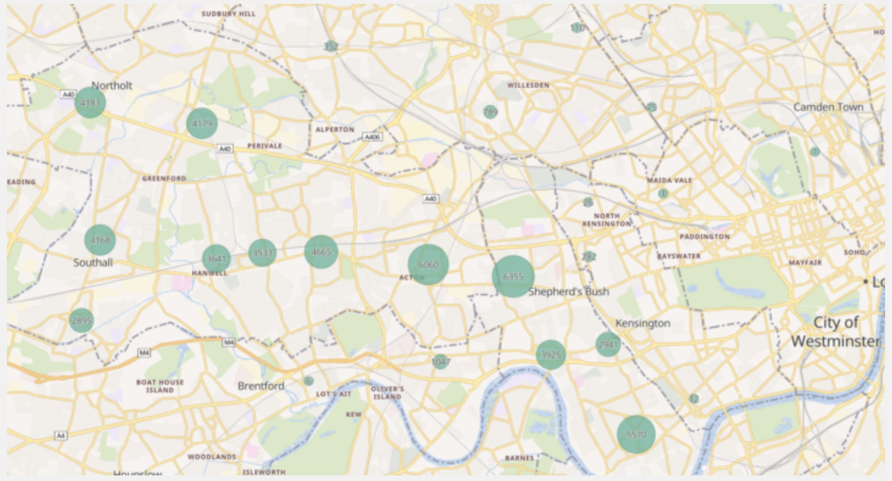
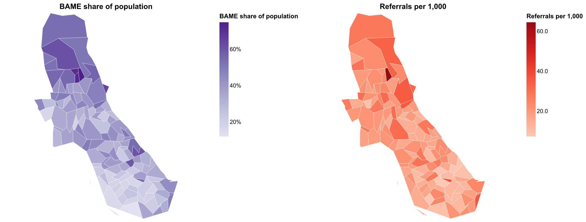
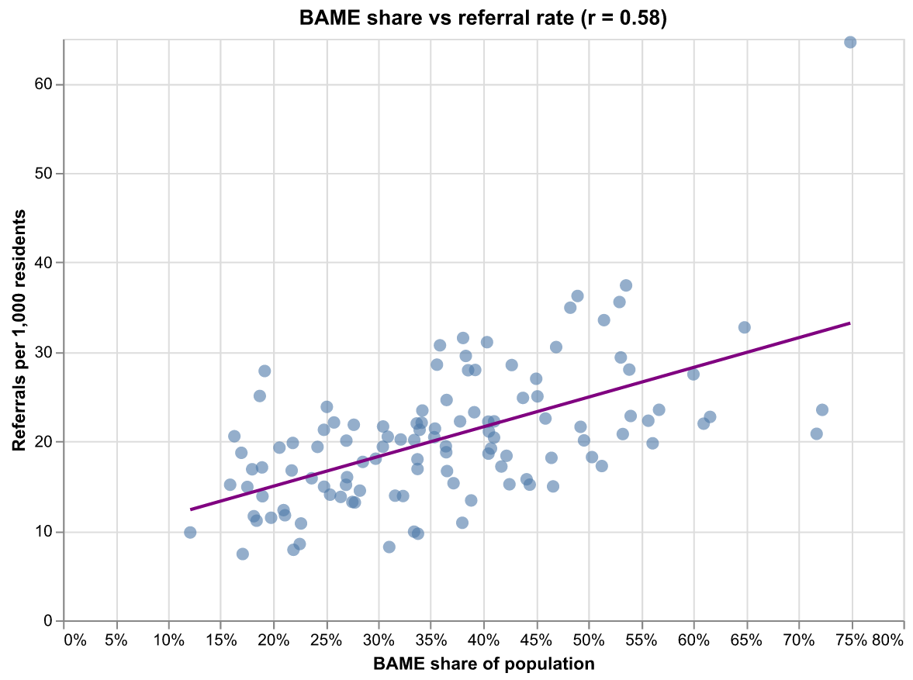

Sobus BAME hospitalisation analysis
Reference article: DataKind UK - Sobus
More about what Sobus is doing: Sobus
Problem Statement
Sobus identified ongoing concerns about the disproportionate numbers of BAME (Black, Asian, and Minority Ethnic) people diagnosed with mental health conditions and under the care of mental health services, coupled with inadequate service provision to these communities.
Key Challenge: There was a lack of comprehensive local data mapping the BAME mental health landscape, making it difficult to understand the scope and nature of service gaps.
Research Questions:
- Was there a disproportionate representation of BAME people diagnosed and under the care of Mental Health Services?
- What was the current service provision for the BAME community suffering from mental health issues?
- How could data-driven insights inform more equitable mental health service delivery?
Objective: To map the BAME mental health landscape locally as a starting point for addressing service disparities and improving access to appropriate mental health support.
Dataset Involved
The project successfully obtained data from multiple sources to provide a comprehensive view of mental health services in West London:
- West London NHS Trust: Main provider of mental health services across three boroughs (Hammersmith & Fulham, Ealing, and Hounslow)
- Hammersmith & Fulham GP Federation: Primary care data to understand community-level health patterns
- LBH&F Social Care Data: Local authority social care information
- Sobus Sector Survey: Primary research to capture community perspectives and service gaps
Desired Output

Figure 1: Distribution of mental health referrals by region in Hammersmith and FulhamKey Findings:
- Disproportionate Representation: BAME communities were overrepresented in mental health care, with rates 3-8 times higher than white equivalents across various diagnoses
- Service Quality Gap: The quality of health service support in the region was below the London average
- Critical Self-Harm Rates: Hammersmith & Fulham recorded the highest rate of BAME self-harm incidents in London
Replicating the Output with KindTech
Data Requirements
Internal Dataset: West London NHS Trust anonymised referral data broken down by ethnicity for Hammersmith and Fulham, with outcode (postcode prefix) attached to each referral for geographic analysis.
Analysis Workflow
- Geographic Mapping: Convert outcodes to LSOA (Lower Layer Super Output Area) codes
- Per-Capita Calculation: Compute the number of referrals per capita for each LSOA
- Visualization: Create geographic maps showing referral density and ethnic distribution patterns
Reproduction
A runnable, end-to-end reproduction lives in
examples/sobus_bame_referrals.py
(a marimo notebook). It chains three KindTech connectors,
all joining on the 2021 LSOA geography_code:
 — run it live in the browser (the molab cloud runtime fetches real ONS
data), or locally with
— run it live in the browser (the molab cloud runtime fetches real ONS
data), or locally with uv run marimo edit examples/sobus_bame_referrals.py.
from kindtech import outcode_to_geography, load_ons, load_geodata
# 1. A referral's outcode -> LSOA (the step real referral data would use)
outcode_to_geography(["W6", "W12", "W14"], geography_type="LSOA")
# 2. Ethnic composition per LSOA (Census 2021 TS021), restricted to the borough
eth = load_ons(
"NM_2041_1",
geography="1778385172TYPE151", # LSOAs within Hammersmith & Fulham
time="latest",
c2021_eth_20=[0, 1004], # Total, White -> BAME = Total - White
)
Everything is on 2021 LSOAs — no crosswalk
The postcode connector returns 2021 LSOA codes, Census 2021 is on 2021
LSOAs (and gives the population denominator and the BAME share), and the
default LSOA boundaries are 2021. So ethnicity, population and referral
geography line up on one geography_code with no vintage conversion.
Outcode → LSOA is a rough, centroid-based stand-in
An outcode (e.g. W6) spans many LSOAs, so outcode_to_geography returns
only the LSOA at its centroid — and a centroid can even fall in a
neighbouring borough. With full postcodes use postcodes_to_geography
for an exact mapping. The analysis below runs at true LSOA resolution from
the census; the outcode step only demonstrates the mechanism.
Real NHS Trust referrals are confidential, so the notebook generates synthetic referrals per LSOA at a rate that rises with the area's BAME share, and models a BAME resident as more likely to be referred than a White resident — reproducing the over-representation the study tested for.
Where is the need? — BAME share of population (left) and synthetic referral rate (right). Shared dark areas mean referrals come from the most-BAME LSOAs:

Figure 2: BAME share of population (left) vs synthetic mental-health referrals per 1,000 residents (right) across Hammersmith & Fulham's 115 LSOAs. The hotspots align.Are BAME residents over-represented? Each LSOA's BAME share against its referral rate:

Figure 3: A clear positive correlation between BAME share and referrals per capita — the direction the original study found. Across the borough BAME residents are ~37% of the population but a higher share of referrals.To run on real data, feed each referral's postcode through
postcodes_to_geography(..., "LSOA"), tag it with the patient's ethnicity, and
aggregate per geography_code; the census join, per-capita maths and maps are
unchanged.
Lessons Learned
Key takeaways and recommendations:
- Geography reveals disparity: mapping referrals against ethnic composition at LSOA level exposes where need concentrates and quantifies over-representation — the starting point Sobus wanted for addressing service gaps.
- Per-capita normalisation matters: raw referral counts track population size; normalising by residents reveals true demand independent of how many people live in each area.
- Postcode resolution drives accuracy: full postcodes map cleanly to LSOAs; outcodes only approximate via a centroid and can cross borough boundaries, so the granularity of the source postcode caps the analysis.
- Census is the denominator: 2021 ethnic-group data on 2021 LSOAs joins natively to referral geography, no crosswalk needed.